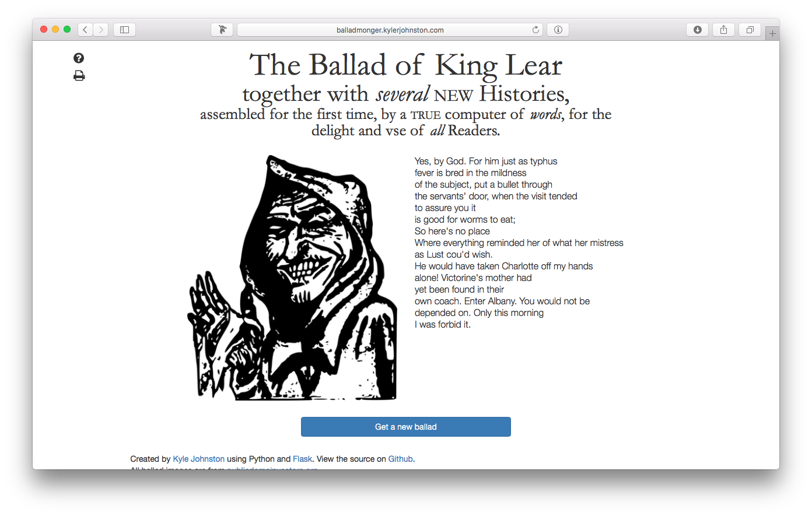

Projects
Here are some things I’ve made on the internet.
Balladmonger
Balladmonger is a small web app built with Python and Flask which dynamically generates a poem—or a “ballad”—based on one or more training texts each time the page is loaded. The instance deployed on Heroku is trained on King Lear and about two dozen other texts which are themselves based on King Lear, ranging from early modern ballads to Sense and Sensibility to twenty-first century fanfiction. I developed it for a seminar exploring Shakespearean remediations and the early modern ballad form. See the post On Sitting Down to Reflect on Making Some Ballads Again for more details.

This site
Python, Flask, jQuery and Javascript, HTML and CSS
My goal for this project was to make a blog that was really easy to manage. All content is written in markdown. Using Flask-Frozen, the whole site can be exported into static HTML files which can easily be uploaded to Github Pages.